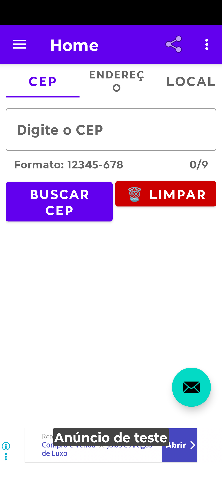
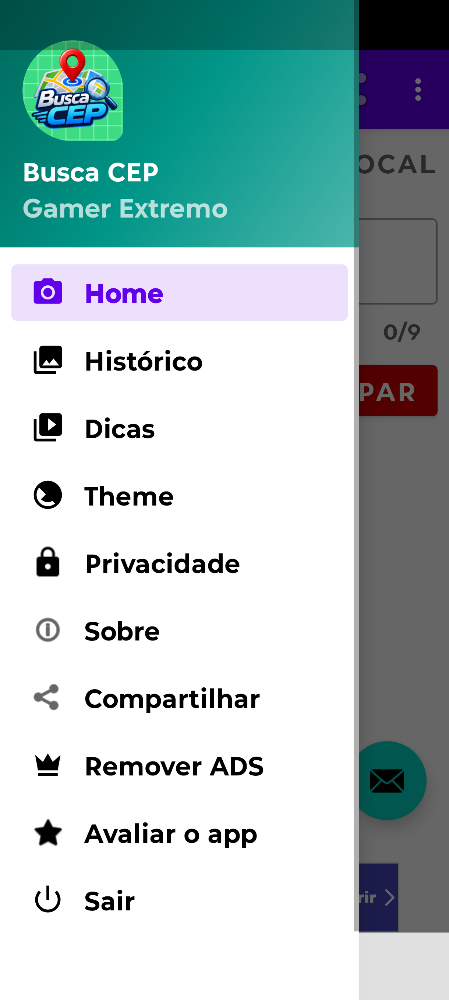
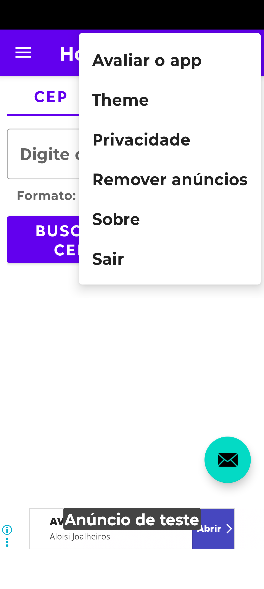

📍 Busca CEP
O Busca CEP é a ferramenta definitiva e mais rápida para encontrar qualquer endereço no Brasil. Consulte CEPs, ruas e use o GPS para encontrar endereços e localização. Seja para preencher um cadastro, fazer uma entrega ou descobrir onde fica um local, este app resolve em segundos.
Com interface moderna, suporte a temas Claro e Escuro e fácil de usar, você tem tudo na palma da mão!
✨ Funcionalidades
- Consulta de CEP por endereço ou rua
- Busca de endereço completo a partir do CEP
- GPS integrado — encontre sua localização atual e CEP próximo
- Interface moderna e intuitiva
- Suporte a temas Claro e Escuro
- Gratuito, com anúncios discretos
📸 Screenshots



❓ Perguntas Frequentes
O app é gratuito?
Sim, o Busca CEP é totalmente gratuito, com anúncios discretos que ajudam a manter o desenvolvimento.
Preciso de internet para usar?
Sim, para consultar CEPs e endereços. A busca usa a API pública ViaCEP, que requer conexão. O GPS também pode precisar de internet para maior precisão, mas o sinal de satélite funciona offline.
O app acessa minha localização GPS?
Sim, mas apenas quando você solicita a função de localização. O app pede permissão antes de acessar o GPS. Sua localização é usada para encontrar endereços e CEPs próximos, e não é armazenada em servidores nossos.
Meus CEPs consultados ficam salvos?
O histórico de consultas (se implementado) fica armazenado apenas no seu dispositivo. Você pode limpá-lo nas configurações do app ou desinstalando o aplicativo.
O que é a API ViaCEP?
É um serviço público brasileiro que retorna dados de endereço a partir de um CEP. Quando você digita um CEP, o app envia essa consulta para a ViaCEP. Nenhum dado pessoal seu é enviado além do CEP consultado.
Como reporto um erro ou sugiro uma melhoria?
Envie um e-mail para gamerextremobr5@gmail.com ou abra uma issue no GitHub.
📜 Histórico de Versões
Versão 1.01
05 de Novembro de 2026 — Lançamento inicial
- Consulta de CEP por endereço e por rua
- Busca de endereço completo a partir do CEP
- Integração com GPS para localização atual
- Suporte a temas Claro e Escuro
- Interface moderna e responsiva
🔒 Privacidade
O Busca CEP usa GPS apenas quando solicitado, não armazena sua localização em servidores e não coleta dados pessoais. As consultas de CEP são enviadas à API pública ViaCEP. Saiba mais na política abaixo.